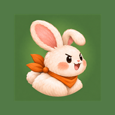

작은 토끼와 함께 초록 들판을 달려요.장애물을 넘고, 아삭한 당근을 모아보세요.
Space 또는 화면을 터치해 점프
이동속도 +0%
다음 효과 +10%
점프 높이 +0%
최대 5레벨 · 레벨당 10% · 강화 비용은 매번 2배
강화 비용: 1,000 → 2,000 → 4,000 → 8,000 → 16,000코인시작 전 적용 레벨을 골라요. 점프 Lv.3이면 높은 당근 길에도 올라갈 수 있어요.
특성은 영구 유지되며 이 브라우저에 저장됩니다.

첫 실행 시 게임을 저장해 두면 인터넷 없이도 즐길 수 있어요.